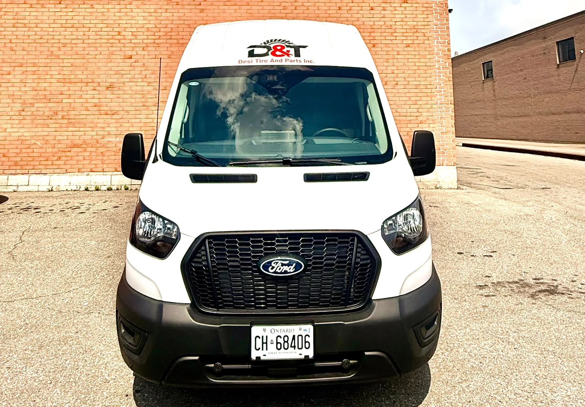
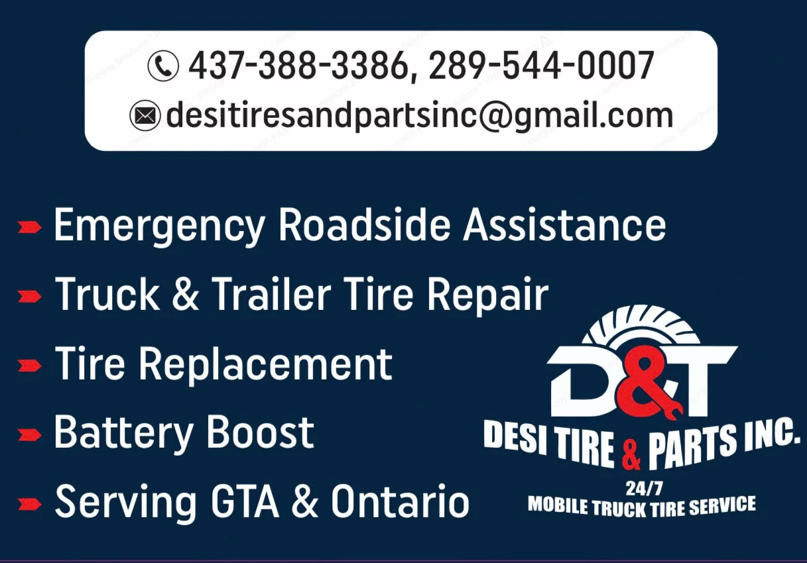

MORE THAN A TIRE SERVICE.
A reliable mobile tire service partner for commercial drivers, owner-operators and fleet operators across GTA and Ontario.
KEEPING YOUR BUSINESS MOVING.
Desi Tire And Parts Inc. was built around a simple priority: supporting people who depend on their vehicles to keep working.
A tire issue can disrupt a delivery, affect schedules and add stress to a busy day. We understand the importance of keeping commercial vehicles moving, which is why we offer 24/7 mobile truck and trailer tire service throughout the Greater Toronto Area and Ontario.
Whether you're an independent driver dealing with a roadside problem or a fleet operator managing multiple vehicles, our focus is on practical tire solutions, professional assistance and clear communication.
SEE WHAT WE DO →
WHAT DRIVES US EVERY DAY
We aim to make commercial tire assistance more convenient for the people and businesses that depend on it.
HERE 24/7
Because tire emergencies don't wait for business hours, you can contact us day or night.
MOBILE SERVICE
We bring tire-related assistance to your location, helping reduce the hassle of a breakdown.
PRACTICAL SOLUTIONS
Our service is focused on diagnosing tire-related needs and discussing suitable next steps.
CUSTOMER FIRST
We value dependable communication, quality service and confidence on the road.

SUPPORT FOR EVERY MILE.
Different routes. Different vehicles. One priority: getting your wheels rolling again.
- Commercial truck drivers on the road
- Owner-operators managing their own vehicles
- Trucking and transportation businesses
- Fleet operators with ongoing tire service needs
- Truck and trailer operators across Ontario